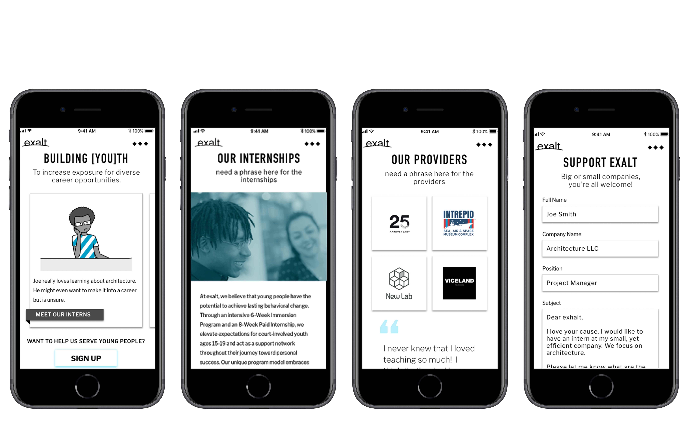

Interviews & User Research
In order to find the simpliest way to bridge the gap between Exalt and a potential internship provider, we interviewed the Exalt internship coordinator to figure out the current problem with the site. We found that Exalt had a problem finding internship providers that trulu understood the program. After realzing the problem, we interviewed both potential and past providers. During our research we found participants wanted to see more quotes from interns and wanted to know what to expect from the program. They also all compared their internship experiences as more of mentorship so we wanted to incorporate that feeling for the site.
Solving The Problem
After collecting all our research, we started mapping out the user journey flow. We decided to engage the potential provider with a cartoon portraying the mentorship that comes with being an internship provider. We moved our paper wireframes to sketch to add more features and additional flows. After using testing our Lo-Fi prototypes, we decided to add style. For our style guide, we wanted to incorporate the Exalt brand with the fusia color but also introduce a teal for contrast. We wanted to portray the Exalt brand through playful diverse illustrations to tell a story.

The Final Product
For the final product, we made the internship site compatible for both desktop and mobile. We wanted our site to welcome the user with a playful cartoon describing the Exalt internship experience. If users don’t want to click on the tabs throughout the cartoon, they can always use the top navigation bar. We separated our site in four sections- the types of internships, past intern testimonials, past providers testimonials, and the sign up form. We wanted to include testimonials so future providers can read about the challenges and accomplishments both interns and providers felt. We wanted our call to action ‘sign up’ button to remain at the bottom of each page to encourage involvement. We wanted to help users understand the Exalt internship process better and also encourage them to get involved.